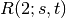

This documentation is for the development version 1.8.dev_20131031104627
min_maximal_matching
min_weighted_vertex_cover
Enter search terms or a module, class or function name.
Approximately computes the Ramsey number  for graph.
G : NetworkX graph
Undirected graph
max_pair : (set, set) tuple
Maximum clique, Maximum independent set.